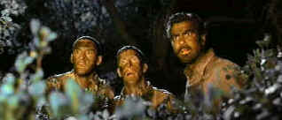

| O
Brother, Where Art Thou/A,A |
| Touchstone/2000/103/ANA 2.35 |
A road odyssey paved by smiles, O Brother, Where Art Thou proves the
Coen Brothers current wizards of mirth in delivering cinema laughs. No, it's not the success saga
of the Soggy Bottom Boys, rising out of the Mississippi swamplands to the height of popular music,
but it could have been. Joel and Ethan Coen, drawing on the roadmap of Homer's Odyssey, have
created a trio of earthbound characters they could have taken anywhere. It's the getting there that
makes this reviewer a man of constant smiles.
Three convicts, bound together by their chains, break for freedom through a
golden field and so begins the whimsical journey of Ulysses Everett McGill, Pete and Delmar. With a
gift of gab and slick good looks held together with a generous helping of Dapper Dan hair gel,
Everett is the natural leader of the group. He also provides the journey's raison d'etre, the
buried bank booty that landed McGill in prison. Of course, after hitching a ride on a hand-pumped
railway car piloted by a blind prophet, the boys get an inkling that this may not be your ordinary
dig up the treasure journey. Along the way, courtesy of Homer, the trio must survive the song of
the Sirens, get past a formidable Cyclops road block, and face the terrors of constant pursuit.
Their journey may be fraught with peril, but it's brought to life with delightful period
details.
As Pappy O'Daniel might say, these boys are the real goods and they surely know
their horse flesh. Roger Deakins, once again is behind the Coen camera translates the unique
vision of the brothers to film. Deakins paints with light for some of the most gorgeous filmmaking
in recent memory. There's some incidental music from Carter Burwell to keep the boys from veering
off course, but it is the rather terrific use of period music perfectly integrated into the plot
with happy logic that invests the soundtrack with its magic.
George
Clooney strides into the world of Coen with incredible presence easing into his madcap
character armed with disarming charm. Man, does he use his eyes to extract every drop of humor from
his lead lip-synched rendition of the Soggy Bottom Boys big musical triumph I Am A Man of
Constant Sorrow. When Clooney struts his dance stuff on the stage it's equally hilarious. Tim
Blake Nelson is a master of the dumb cluck look. Nelson breaks out his open-mouthed gawking for
regular delight while John Turturro digs to the roots of Pete's red neck heritage to cultivate
bristly humor. The Coen casting polishes O Brother, Where Art Thou to gem brilliance. Coen
regular John Goodman is a regular one-eyed demented jolly green giant and when Holly Hunter says no
her body language backs up the dialogue. Charles Durning makes irascible down home politician Pappy
O'Daniel wonderfully practical.
The Coen Brothers work in beautiful tandem with an unabashed joy for filmmaking.
Like two kids playing in a sandbox filled by frames of cinema history, the brothers gleefully sift
through the wealth of celluloid grains to produce their own unique movie style. O Brother, Where
Art Thou may be the most joyous creation of their body of work. The free wheeling spirit of the
story telling takes pleasure in every step of the journey from paper to film. With a title borrowed
from Preston Sturges' Sullivan's
Travels, a touch of The
Wizard of Oz through
in with grand effect, the Coen brothers run less on high octane and more on diesel fuel in their
latest film. You can share their joy every step of the way.
 |
| Another stop on the odyssey.
©Touchstone |
Oh, brother, what a gorgeous transfer. The meticulously manipulated
Deakins color is delivered with perfection on this DVD. Working
with a fully saturated desaturated look, color is controlled brilliance. Check out chapter 10 when
Ulysses Everett McGill and company meet up with a trio of scantily clad ladies pounding their wash
in the river. Background golden foliage is beautifully delineated as is the rambling river
currents. Close-ups capture wide-eyed sexual hunger. The magical golden landscape hues are
moodily luminescent. Colors are beautifully rendered, slightly bleached, but saturated within a
beautifully controlled range. Depth of information is simply glorious. Every leaf on every tree is
clearly delineated and rock stable. You won't miss the glitter in George Clooney's eye as he
hatches a harebrain turn or two and waxed rhapsodic about the beauties of Dapper Dan. Every course
bristle of beard on John Turturro's face is perfectly defines and each grand expression of
dumbfound recognition on Tim Blake Nelson is reduced in impact by a fuzzy image. Shadow detail is
handled like a Dutch master's painting: a warm night glow illuminates the characters in the half
shadow of flickering fire showing off the capabilities of a properly calibrated video system. Both
DTS and Dolby Digital 5:1 surround track are provided. The mix is aggressive yet delicately
sculpted. Location music floats heavenly in the moist dust heavy air.
A nice short, Painting with Pixels, demonstrates how O Brother, Where
Art Thou was planned for aggressive digital color manipulation from the outset. Roger Deakins
joins staff of post house Cinesite in explaining the processes. A music video of I Am A Man
of Constant Sorrow is also included as well as two scene comparisons between actual footage and
story boards. A typical making of short completes the package with comments from the Coen brothers,
Deakins, Clooney, Turturro, Nelson, and Hunter.
|
|
|
|

Selections from the Feature Archive include articles on
Akira Kurosawa, Frank
Darabont, Blonde Bimbos, Hollywood Street Gangs, or Vietnam: The
Hollywood Pariah, and many more....
Sturges Emerges
Preston Sturges was Hollywood's resident comic genius for more than a decade. His movies are
timeless. Click on his image to read all about it.

 Have you visited Home Theater
Talk lately? One of the friendliest places on the Net for Home Theater and DVD discussion, you
can get help for installation problems or simply share your opinions with other Vidiots. Have you visited Home Theater
Talk lately? One of the friendliest places on the Net for Home Theater and DVD discussion, you
can get help for installation problems or simply share your opinions with other Vidiots.

ISF Monitor Calibrations in the
Tristate New York area. Lots of hardware info and frequent hardware peaks from video expert Kevin
Miller.They may be judgmental, but that's the point, isn't it. Lots of DVD reviews plus news and
more.

The official site for information about the great comic director. A treat for connoisseurs of
classic Hollywood madcap.
 The online
site for Film Comment
Magazine includes all the information you need to know about cinematic events
sponsored by the Film Society of Lincoln Center. The online
site for Film Comment
Magazine includes all the information you need to know about cinematic events
sponsored by the Film Society of Lincoln Center.

Comprehensive DVD review database. Easy to use
interface with specific region searches.

Click on the DVD MIA symbol for
profiles of DVDs missing in action.
Add films to the DVD MIA Master List by filling out
a simple form. Click Here

The
Movie Poster Archive include extensive poster images from the films of stars like Susan Hayward,
Kirk Douglas, Katharine Hepburn and many more. Our featured star is Clark Gable.

I just love to watch the FBI Warning and that isn't enough, I am
treated to a graphic designer's wet logo dream.
FBI Warning/
Logo Wars


A film of extraordinary power that pulls no punches, The Grifters is not to be missed.
Hungry characters on the con, the short con, the long con, the self con.
|